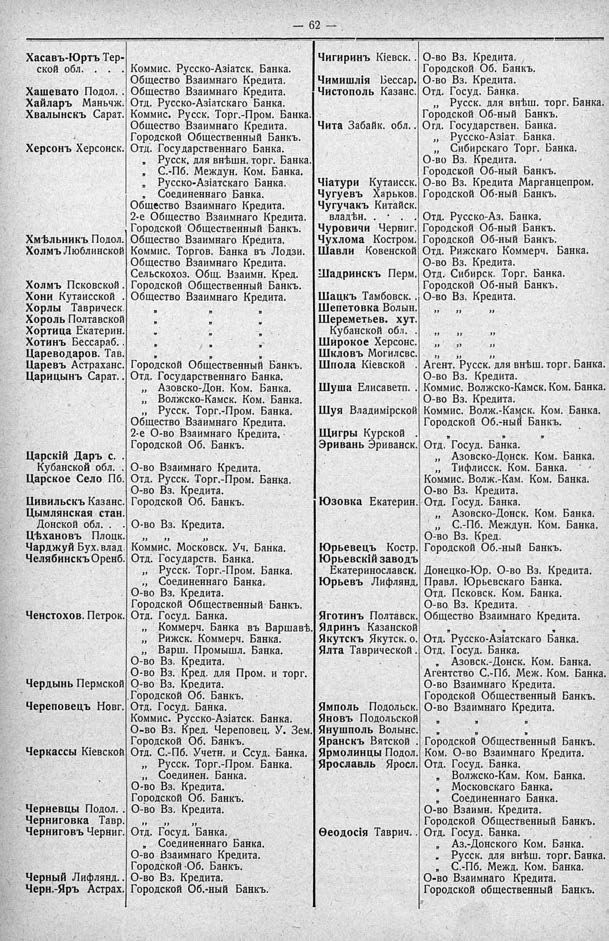

Лист источника 108
Скан

Распознанный текст
— 62 —
Хасавъ-Юртъ Тер-
ской обл. . . . Коммис. Русско-Азіатск. Банка.
Общество Взаимнаго Кредита.
Хашевато Подол. . Общество Взаимнаго Кредита.
Хайларъ Маньчж. Отд. Русско-Азіатскаго Банка.
Хвалынскъ Сарат. Коммис. Русск. Торг.-Пром. Банка.
Общество Взаимнаго Кредита.
Городской Общественный Банкъ.
Херсонъ Херсонск. Отд. Государственнаго Банка.
„ Русск. для внѣшн. торг. Банка.
„ С.-Пб. Междун. Ком. Банка.
„ Русско-Азіатскаго Банка.
„ Соединеннаго Банка.
Общество Взаимнаго Кредита.
2-е Общество Взаимнаго Кредита.
Городской Общественный Банкъ.
Хмѣльникъ Подол. Общество Взаимнаго Кредита.
Холмъ Люблинской Коммис. Торгов. Банка въ Лодзи.
Общество Взаимнаго Кредита.
Сельскохоз. Общ. Взаимн. Кред.
Холмъ Псковской . Городской Общественный Банкъ.
Хони Кутаисской . Общество Взаимнаго Кредита.
Хорлы Таврическ. „ „ „
Хороль Полтавской „ „ „
Хортица Екатерин. „ „ „
Хотинъ Бессараб. . „ „ „
Цареводаров. Тав. „ „ „
Царевъ Астраханс. Городской Общественный Банкъ.
Царицынъ Сарат. . Отд. Государственнаго Банка.
„ Азовско-Дон. Ком. Банка.
„ Волжско-Камск. Ком. Банка.
„ Русск. Торг.-Пром. Банка.
Общество Взаимнаго Кредита.
2-е О-во Взаимнаго Кредита.
Городской Об. Банкъ.
Царскій Даръ с.
Кубанской обл. . О-во Взаимнаго Кредита.
Царское Село Пб. Отд. Русск. Торг.-Пром. Банка.
О-во Вз. Кредита.
Цивильскъ Казанс. Городской Об. Банкъ.
Цымлянская стан.
Донской обл. . . О-во Вз. Кредита.
Цѣхановъ Плоцк. „ „ „
Чарджуй Бух. влад. Коммис. Московск. Уч. Банка.
Челябинскъ Оренб. Отд. Государств. Банка.
„ Русск. Торг.-Пром. Банка.
„ Соединеннаго Банка.
О-во Вз. Кредита.
Городской Общественный Банкъ.
Ченстохов. Петрок. Отд. Госуд. Банка.
„ Коммерч. Банка въ Варшавѣ.
„ Рижск. Коммерч. Банка.
„ Варш. Промышл. Банка.
О-во Вз. Кредита.
О-во Вз. Кред. для Пром. и торг.
Чердынь Пермской О-во Вз. Кредита.
Городской Об. Банкъ.
Череповецъ Новг. Отд. Госуд. Банка.
Коммис. Русско-Азіатск. Банка.
О-во Вз. Кред. Череповец. У. Зем.
Городской Об. Банкъ.
Черкассы Кіевской Отд. С.-Пб. Учетн. и Ссуд. Банка.
„ Русск. Торг.-Пром. Банка.
„ Соединен. Банка.
О-во Вз. Кредита.
Городской Об. Банкъ.
Черневцы Подол. . О-во Вз. Кредита.
Черниговка Тавр. „ „ „
Черниговъ Черниг. Отд. Госуд. Банка.
„ Соединеннаго Банка.
О-во Взаимнаго Кредита.
Городской Об. Банкъ.
Черный Лифлянд. . О-во Вз. Кредита.
Черн.-Яръ Астрах. Городской Об.-ный Банкъ.
Чигиринъ Кіевск. . О-во Вз. Кредита.
Городской Об. Банкъ.
Чимишлія Бессар. О-во Вз. Кредита.
Чистополь Казанс. Отд. Госуд. Банка.
„ Русск. для внѣш. торг. Банка.
Городской Об-ный Банкъ.
Чита Забайк. обл. . Огд. Государствен. Банка.
„ Русско-Азіат. Банка.
„ Сибирскаго Торг. Банка.
О-во Вз. Кредита.
Городской Об-ный Банкъ.
Чіатури Кутаисек. О-во Вз. Кредита Марганцепром.
Чугуевъ Харьков. Городской Об-ный Банкъ.
Чугучакъ Китайск.
владѣн. . . . . Отд. Русско-Аз. Банка.
Чуровичи Черниг. Городской Об-ный Банкъ.
Чухлома Костром. Городской Об-ный Банкъ.
Шавли Ковенской Отд. Рижскаго Коммерч. Банка.
О-во Вз. Кредита.
Шадринскъ Перм. Отд. Сибирск. Торг. Банка.
Городской Об-ный Банкъ.
Шацкъ Тамбовск. . О-во Вз. Кредита.
Шепетовка Волын. „ „ „
Шереметьев. хут.
Кубанской обл. . „ „ „
Широкое Херсонс. „ „ „
Шкловъ Могилевс. „ „ „
Шпола Кіевской . Агент. Русск. для внѣш. торг. Банка.
О-во Вз. Кредита.
Шуша Елисаветп. . Коммис. Волжско-Камск. Ком. Банка.
О-во Вз. Кредита.
Шуя Владимірской Коммис. Волж.-Камск. Ком. Банка.
Городской Об.-ный Банкъ.
Щигры Курской . „ „ „
Эривань Эриванск. Отд. Госуд. Банка.
„ Азовско-Донск. Ком. Банка.
„ Тифлисск. Ком. Банка.
Коммис. Волж.-Кам. Ком. Банка.
О-во Вз. Кредита.
Юзовка Екатерин. Отд. Госуд. Банка.
„ Азовско-Донск. Ком. Банка.
„ С.-Пб. Междун. Ком. Банка.
О-во Вз. Кред.
Юрьевецъ Костр. Городской Об.-ный Банкъ.
Юрьевскій заводъ
Екатеринославск. Донецко-Юр. О-во Вз. Кредита.
Юрьевъ Лифлянд. Правл. Юрьевскаго Банка.
Отд. Псковск. Ком. Банка.
О-во Вз. Кредита.
Яготинъ Полтавск. Общество Взаимнаго Кредита.
Ядринъ Казанской „ „ „
Якутскъ Якутск. о. Отд. Русско-Азіатскаго Банка.
Ялта Таврической . Отд. Госуд. Банка.
„ Азовск.-Донск. Ком. Банка.
Агентство С.-Пб. Меж. Ком. Банка.
О-во Взаимнаго Кредита.
Городской Общественный Банкъ.
Ямполь Подольск. О-во Взаимнаго Кредита.
Яновъ Подольской „ „ „
Янушполь Волынс. „ „ „
Яранскъ Вятской . Городской Общественный Банкъ.
Ярмолинцы Подол. Ком. О-во Взаимнаго Кредита.
Ярославль Яросл. Отд. Госуд. Банка.
„ Волжско-Кам. Ком. Банка.
„ Московскаго Банка.
„ Соединеннаго Банка.
О-во Взаимн. Кредита.
Городской Общественный Банкъ.
Ѳеодосія Таврич. . Отд. Госуд. Банка.
„ Аз.-Донского Ком. Банка.
„ Русск. для внѣш. торг. Банка.
„ С.-Пб. Межд. Ком. Банка.
О-во Взаимнаго Кредита.
Городской Общественный Банкъ.